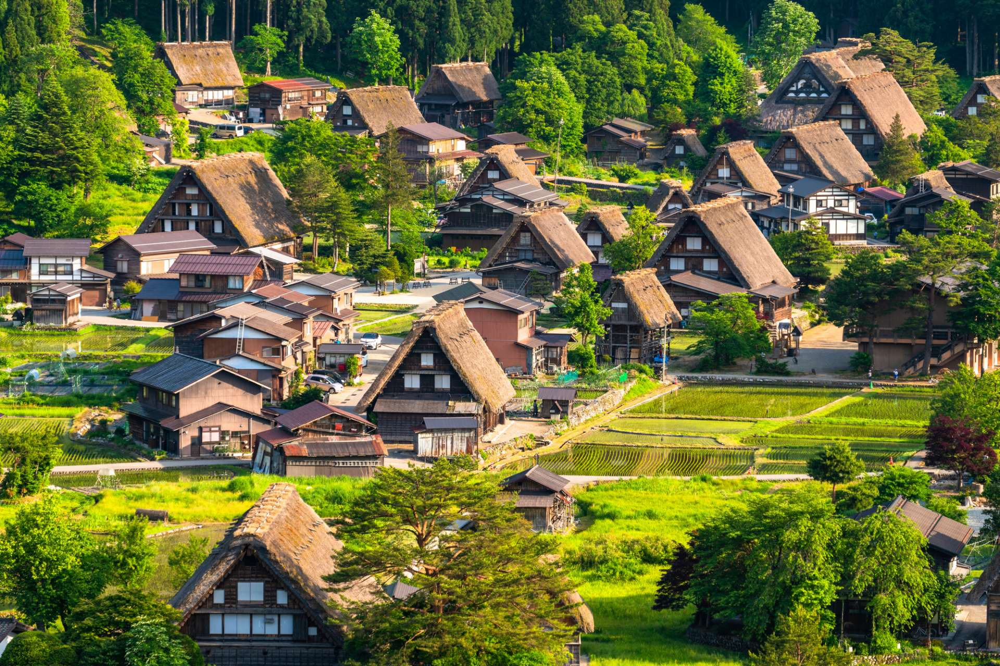

景點介紹
白川鄉位於神聖的白山 山腳處，是岐阜的一個必遊景點。這一傳統村落被世界教科文組織列為世界遺產，放眼望去都是宜人的美景，宛如一張唯美的風景明信片。
從荻町開始觀光之旅
白川鄉荻町是日本最大的合掌造村莊。 「合掌造」此一名稱意為「形似合掌祈禱的雙手」。
每棟房子都是木工的匠心之作，而且完全沒有用到釘子，橫樑插槽完美縫合連接為一體。這種結構十分堅固，在這個地震好發的國家，它們從
19 世紀至今一直屹立不倒。

白川鄉位於神聖的白山 山腳處，是岐阜的一個必遊景點。這一傳統村落被世界教科文組織列為世界遺產，放眼望去都是宜人的美景，宛如一張唯美的風景明信片。
白川鄉荻町是日本最大的合掌造村莊。 「合掌造」此一名稱意為「形似合掌祈禱的雙手」。
每棟房子都是木工的匠心之作，而且完全沒有用到釘子，橫樑插槽完美縫合連接為一體。這種結構十分堅固，在這個地震好發的國家，它們從
19 世紀至今一直屹立不倒。